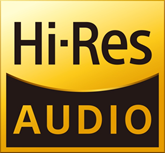
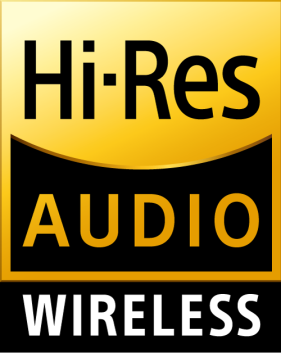
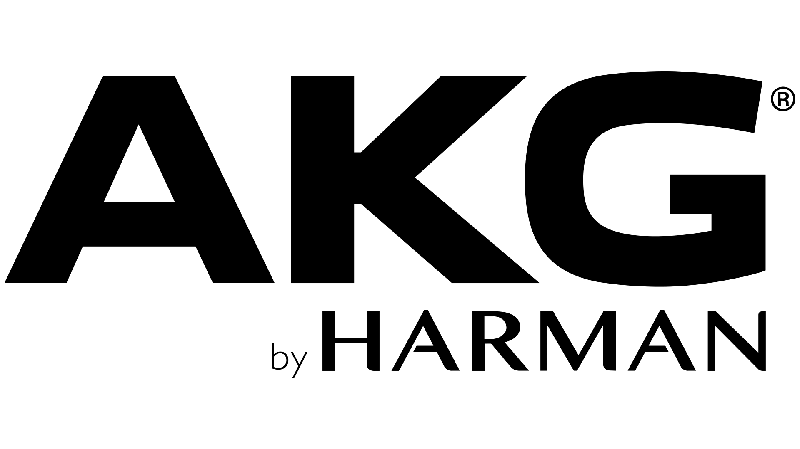

ハイレゾってなに？
ハイレゾとは簡単に言えば普通のものより音がいいモノです。
なんか普通の音源とハイレゾ音源を聞き比べてみて違う感じがしたなら...
さて、ハイレゾとはなにか定義で一応示しておきます(ちょっとむずかしくなるよ)
- アンプ高域再生性能: 40kHz以上が可能であること。
- スピーカー・ヘッドホン高域再生性能: 40kHz以上が可能であること。
むずかしいですね... そんなあなたはこのマークを目印にしてみてください。
 このマークは日本オーディオ協会の定義を満たしたヘッドホンやイヤホン、ワイヤレスヘッドホンやイヤホンに
ついているマークなのでとりあえずこれがついているものを買えば条件はみたせますよ。
注意 : 家電量販店で一度視聴していいと思ってから購入してくださいね！
お気に入りヘッドホンやイヤホンを入手してみよう
選ぶ基準はたくさんありますが１番いいのは感覚的にこれだっ！と思った物が良かったりします。
まずは家電量販店に行って試しに聞いてみるといいと思いますよ。
それでも何か基準が欲しいという方は下記のことを参考にしてみてください。
メーカーでえらんでみよう
世の中にはたくさんの音響機器メーカーが存在します。あなたが良く知っているメーカーから知る人ぞ知るメーカまで
そんなメーカーの中から家電量販店で比較的おいてあってメージャーなメーカーを紹介するよ。
それと筆者が個人的に好きなメーカーも紹介するよ。
SONY(ソニー)
AKG(アーカーゲー)
sennheiser(ゼンハイザー)
BOSE(ボーズ)
audio-technica(オーディオテクニカ)
final(ファイナル)

今あげたメーカーで知っているメーカはあったかな？
この中からできればハイレゾマークのついた１万以上のものを購入したら後悔はしないはずですよ。
聴く環境を整備してみよう
家電量販店に行って視聴してみた方はいるかな？たくさんのヘッドホンやイヤホンがあって目移りしたかな？
iPhoneや最近のandroid端末を使っている方はワイヤレスイヤホンやヘッドホンは使えるけど
有線のヘッドホンやイヤホンをさせなくて困った方もいるかもしれないね
ここでは聴くために必要なものを紹介するよ
見るのめんどくさいって人もいるかもだけど知識として知るために読んでくれると嬉しいな
それじゃまずはワイヤレスイヤホンやヘッドホンからだよ
ワイヤレスイヤホンやヘッドホンで必要なモノ
- スマートフォン
- お好きなワイヤレスイヤホンやヘッドホン
これだけだよ でもiPhoneはハイレゾで曲を聴くことはできないから注意してね
次は有線のイヤホンやヘッドホンだよ
有線のイヤホンやヘッドホンで必要なモノ
- イヤホンジャック付きのスマートフォン
ない場合はUSBDACが必要
- お好きなイヤホンやヘッドホン
USBDACはスマートフォンとイヤホンやヘッドホンをつなぐものだよ
つなぐとiPhoneでもハイレゾを聴くことができるよ
中級編では実際にハイレゾ音源をきいてみたりするよ
ぜひ中級編もよんでみてね！